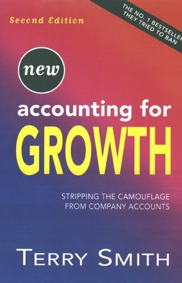

1990年前后，特里·史密斯（Terry Smith）还是瑞银旗下Phillips & Drew的英国公司研究主管。他把一份分析英国上市公司如何用会计手法粉饰利润的研究扩写成书，1992年由Century Business出版。书里点名的公司中有好几家正是瑞银的客户；瑞银要求他撤回，史密斯拒绝，随即被解雇。这本引发伦敦金融城震动的书反而登上畅销榜，而它揭露的许多做法，后来陆续被会计准则收紧或禁止。
史密斯要回答的问题很直接：1980年代末、90年代初英国公司账面上漂亮的利润"增长"，究竟是真实的经营改善，还是被合法却误导的"创造性会计"制造出来的？他把叙述锚在几家"看起来很赚钱却突然倒闭"的公司上——波利·佩克（Polly Peck）、British & Commonwealth、Coloroll——它们死于现金流断裂，而非账面亏损。全书系统地拆解了十二种粉饰利润与每股收益的技巧：收购前计提准备、处置资产、递延对价、把开支塞进"非常项目"和"例外项目"、表外融资、或有负债、费用资本化、把品牌当资产入账、变更折旧政策、带卖出期权的可转债、养老金会计，以及货币错配。书中最引争议的，是一张给公司"数黑点"的评分表——按每家公司用了多少种技巧逐一打分，把粉饰行为直接摆到台面上。
史密斯后来离开分析师岗位，一路做到Collins Stewart与Tullett Prebon的CEO，并在2010年创立基金公司Fundsmith，以"买好公司、别买贵、然后什么都别做"的信条广为人知，被英国媒体称作"英国的巴菲特"。《增长的会计》至今没有中文版（他日后结集的《Investing for Growth》则有中译）；但对中文读者而言，书里那套"利润是账面数字、现金才是事实"的怀疑式读法并未过时。
这本书真正的遗产，是一种阅读财报的姿态：把每一处"增长"当作需要被追问的对象，先问它是否带来了相应的现金，再看它靠的是经营还是会计选择。史密斯本人从揭露账目伪装的分析师，变成只买高资本回报、少动作的长期投资者，这条轨迹本身就说明——识别哪些公司在"做账"，与找出哪些公司真正在创造价值，原是同一枚硬币的两面。